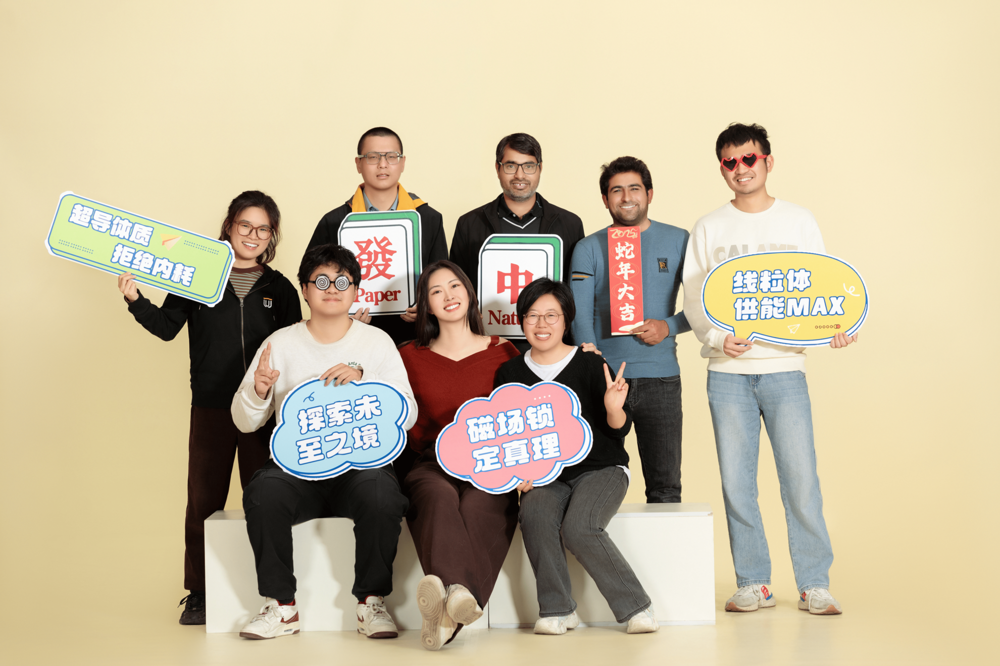
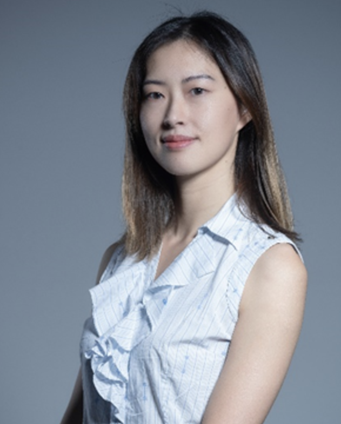

欢迎访问西湖大学尤晓课题组。

VISION
科学愿景
生命与材料体系中的许多关键过程，并不只由静态结构决定，更与分子的运动、瞬态相互作用以及动态涨落密切相关。课题组发展并应用先进光谱方法，研究复杂环境中的氢键动力学、界面水化、分子组织行为以及非平衡过程。我们尤其关注局域相互作用如何在不同空间与时间尺度上协同演化，并最终影响体系整体性质与功能。


News
动态 了解更多
-
{% include home-news-list.html %}
课题组负责人（PI）

尤晓博士
尤晓博士现任西湖大学工学院西湖学者、独立课题组负责人。她于Fudan University获得高分子科学与工程学士学位，随后在University of North Carolina at Chapel Hill获得材料科学博士学位，师从Joanna Atkin教授。博士毕业后，她先后在University of Texas at Austin的Carlos Baiz教授团队，以及斯坦福大学/SLAC国家实验室开展博士后研究，并于2023年加入西湖大学。
尤晓博士的研究聚焦于复杂生物与材料体系中的分子动力学、界面相互作用以及时空异质性问题。课题组结合超快振动光谱、纳米尺度光谱成像与多尺度模拟等方法，探索局域分子相互作用如何在不同空间与时间尺度上演化，并进一步影响体系的结构与功能。目前，尤晓博士已作为项目负责人获得国家自然科学基金青年科学基金、浙江省人才项目等竞争性科研经费支持，累计经费超过330万元。
加入我们:
我们欢迎来自化学、物理、材料、生物及相关交叉领域的学生、博士后与合作伙伴加入课题组。课题组鼓励严谨、开放与富有创造力的科研探索。
如果你对分子动力学、光谱学、复杂体系或交叉科学研究感兴趣，欢迎与我们联系。
实验室助理：黄丹
邮箱: huangdan@westlake.edu.cn